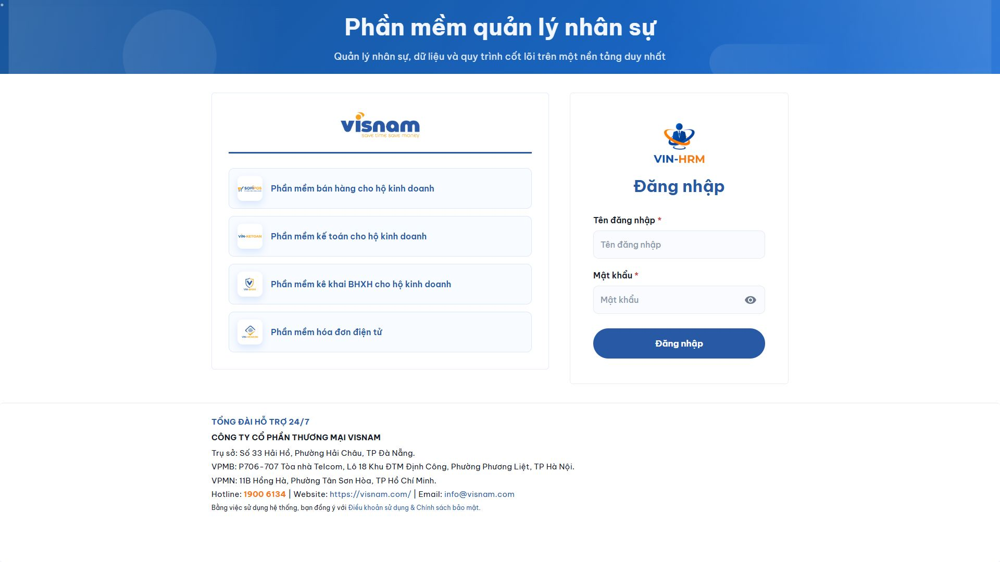

Kết nối dữ liệu • Chuẩn hóa quy trình • Phát triển con người
Dữ liệu nhân sự
Một hồ sơ xuyên suốt toàn bộ vòng đời làm việc
Thời gian và thu nhập
Lịch, công, phép, OT và lương trên cùng luồng dữ liệu
Hiệu suất và phát triển
OKR, đánh giá và đào tạo được kết nối
Vận hành và cộng tác
Công việc, bản tin, chat và tài sản nội bộ
Một hệ thống xuyên suốt từ hồ sơ, hợp đồng, lịch - công - phép - lương đến mục tiêu, đánh giá, đào tạo và cộng tác nội bộ.
CÔNG TY CỔ PHẦN THƯƠNG MẠI VISNAM | visnam.com | 1900 6134
01
Giá trị cốt lõi
Một nền tảng cho toàn bộ hành trình nhân sự
VIN-HRM giúp doanh nghiệp quản lý tập trung dữ liệu, quy trình và hoạt động nhân sự trên một nền tảng thống nhất - từ khi nhân viên gia nhập đến khi phát triển, điều chuyển hoặc kết thúc quá trình làm việc.
Tập trung dữ liệu
Một hồ sơ xuyên suốt
Chuẩn hóa quy trình
Đúng người, đúng bước
Tự động hóa vận hành
Giảm thao tác thủ công
Minh bạch quản trị
Dữ liệu sẵn sàng báo cáo
Doanh nghiệp nhận được gì?
Một nguồn dữ liệu nhân sự thống nhất, giảm thông tin rời rạc giữa các phòng ban.
Quy trình rõ người tạo, người xử lý, bước phê duyệt, trạng thái và lịch sử thay đổi.
Dữ liệu thời gian làm việc, nghỉ phép và điều chỉnh thu nhập được kết nối với tính lương.
Nhân viên, quản lý, HR và lãnh đạo cùng làm việc trên một hệ thống theo đúng quyền hạn.
Nội dung được tổng hợp từ tài liệu tổng quan và 21 đặc tả module VIN-HRM trên Google Drive.
02
Toàn cảnh giải pháp
Bản đồ 21 module VIN-HRM
Hệ thống gồm các module liên kết với nhau, nhưng doanh nghiệp có thể ưu tiên triển khai theo nhu cầu và mức độ sẵn sàng dữ liệu.
01. Phân quyền
02. Cấu hình
03. Danh mục
04. Tổ chức
05. Ca làm việc
06. Nhân viên
07. Phê duyệt
08. Mẫu tài liệu
09. Hợp đồng
10. Lịch làm việc
11. Chấm công
12. Nghỉ phép
13. Thưởng / phạt
14. Tính lương
15. Đánh giá
16. OKR
17. Chat nội bộ
18. Đào tạo LMS
19. Thiết bị
20. Bản tin
21. Công việc
Từ nền tảng quản trị đến nghiệp vụ cốt lõi, hiệu suất và cộng tác
Điểm khác biệt: các module không hoạt động tách rời. Hồ sơ nhân viên là trung tâm; lịch làm việc tạo dữ liệu chấm công; chấm công và nghỉ phép cung cấp đầu vào cho lương; OKR - đánh giá - đào tạo tạo thành vòng phát triển năng lực.
03
Nền tảng quản trị
Linh hoạt theo từng mô hình doanh nghiệp
VIN-HRM hỗ trợ mô hình nhiều doanh nghiệp, chi nhánh và phòng ban; đồng thời cho phép cấu hình quyền, danh mục và luồng phê duyệt theo phạm vi vận hành.
NỀN TẢNG VIN-HRM
Cơ cấu tổ chức
Phân quyền dữ liệu
Cấu hình linh hoạt
Báo cáo quản trị
Quy trình phê duyệt
Các năng lực chính
Cơ cấu tổ chức nhiều cấp: doanh nghiệp, chi nhánh, phòng ban và chức vụ.
Cấu hình nhiều tầng: mặc định hệ thống, theo doanh nghiệp và theo chi nhánh.
Quyền và nhóm quyền kiểm soát chức năng, phạm vi dữ liệu được phép thao tác.
Quy trình phê duyệt dùng chung cho nhiều bước, người xử lý, hành động duyệt và ký.
Danh mục dùng chung và mẫu tài liệu động giúp thay đổi cách vận hành mà không cần sửa logic nghiệp vụ.
04
Vòng đời nhân viên
Một hồ sơ xuyên suốt, đầy đủ lịch sử
Mỗi nhân viên được quản lý như một hồ sơ trung tâm, liên kết thông tin cá nhân, công việc, vị trí, lương, tài liệu, hợp đồng và thiết bị đang giữ.
Tiếp nhận
Tạo hồ sơ và thông tin công việc
Ký kết
Hợp đồng, phụ lục và ký
Vận hành
Lịch, công, phép và thu nhập
Phát triển
Mục tiêu, đánh giá và đào tạo
Chuyển đổi
Điều chuyển, thu hồi và lịch sử
Dữ liệu được kế thừa theo từng giai đoạn thay vì nhập lại nhiều lần
Hồ sơ và hợp đồng
Quản lý thông tin định danh, liên hệ, học vấn, người thân, ngân hàng và tài liệu cá nhân.
Theo dõi thông tin làm việc, vị trí, vai trò, lịch sử điều chuyển và thông tin lương.
Tạo hợp đồng hoặc phụ lục từ mẫu; hỗ trợ tải lên tài liệu sẵn có.
Theo dõi vòng đời hợp đồng: soạn thảo, trình duyệt/ký, hiệu lực, hết hạn hoặc kết thúc trước hạn.
Lưu lịch sử hợp đồng và phụ lục phục vụ tra cứu, kiểm tra và báo cáo.
05
Thời gian làm việc
Lịch - công - phép được kết nối thành một luồng dữ liệu
Hệ thống tách rõ cấu hình ca/lịch mẫu và dữ liệu vận hành theo ngày, từ đó xác định ca làm, thời gian thực tế, đi trễ, về sớm, OT và ngày nghỉ.
Ca mẫu
Định nghĩa giờ làm và lịch tuần
Xếp lịch
Tự động, thủ công hoặc đăng ký
Chấm công
Check-in/out hoặc máy chấm công
Nghỉ và OT
Đăng ký, phê duyệt theo quy trình
Dữ liệu lương
Đầu vào đã kiểm soát
Luồng dữ liệu thống nhất giúp hạn chế điều chỉnh thủ công cuối kỳ
Điểm nổi bật
Thiết lập ca làm, giờ bắt đầu/kết thúc, thời gian nghỉ và phạm vi chi nhánh áp dụng.
Sinh lịch tự động từ lịch cố định; hỗ trợ xếp lịch thủ công và nhân viên đăng ký ca.
Check-in/check-out độc lập hoặc nhập dữ liệu từ máy chấm công.
Ghi nhận đi trễ, về sớm, giờ làm thực tế và làm thêm theo điều kiện đã cấu hình.
Chính sách phép linh hoạt, tính số dư theo nhu cầu, chuyển phép và phê duyệt đơn nghỉ.
06
Thu nhập và tính lương
Tính lương từ dữ liệu đã được kiểm soát
VIN-HRM tổng hợp công, phép, OT, phụ cấp, bảo hiểm, khấu trừ và các khoản điều chỉnh để tạo bảng lương theo kỳ - với khả năng tính lại và khóa kết quả khi hoàn tất kiểm tra.
Dữ liệu đầu vào
Công, phép, OT, phụ cấp, điều chỉnh
Kiểm soát
Quy trình và ràng buộc nghiệp vụ
Tính lương
Tổng hợp theo kỳ lương
Kết quả
Bảng lương, phiếu lương và báo cáo
Dữ liệu nguồn và lịch sử xử lý được giữ rõ ràng trong suốt kỳ lương
Thu nhập phát sinh
Quản lý đề nghị thưởng/phạt cho một hoặc nhiều nhân viên và đưa qua phê duyệt khi cần.
Hỗ trợ thưởng hiệu suất, thưởng dự án, thưởng nóng, phạt vi phạm, truy thu hoặc truy lĩnh.
Khoản điều chỉnh có thể được chi trả ngay hoặc đưa vào kỳ lương phù hợp.
Tạo bảng lương, điều chỉnh, tính lại và khóa bảng lương để bảo đảm tính nhất quán.
Cung cấp bảng lương, phiếu lương/kết quả lương và dữ liệu phục vụ báo cáo chi phí nhân sự.
07
Hiệu suất và phát triển
Kết nối mục tiêu, đánh giá và đào tạo
Ba module tạo thành vòng phát triển liên tục: xác định mục tiêu, đo lường kết quả, đánh giá năng lực và triển khai đào tạo phù hợp.
PHÁT TRIỂN CON NGƯỜI
OKR
Mục tiêu liên kết và tiến độ
ĐÁNH GIÁ
Tiêu chí, kỳ đánh giá và lịch sử
ĐÀO TẠO
Khóa học, kiểm tra và chứng nhận
Ba trụ cột
OKR: chu kỳ, mục tiêu cấp công ty/phòng ban/nhân viên, kết quả then chốt, người phụ trách, check-in và cây mục tiêu.
Đánh giá: bảng/nhóm/tiêu chí/hệ số, kỳ đánh giá, chia sẻ kết quả và lưu lịch sử.
Đào tạo LMS: khóa học, bài học text/video/livestream, ngân hàng câu hỏi, bài kiểm tra, tiến độ, kết quả và chứng nhận số.
08
Cộng tác và vận hành
Công việc hằng ngày diễn ra ngay trong hệ sinh thái HRM
VIN-HRM mở rộng từ quản lý dữ liệu nhân sự sang phối hợp công việc, truyền thông, trao đổi và quản lý tài sản gắn với từng nhân viên.
Công việc
Giao việc, tiếp nhận, kết quả, lịch sử
Chat nội bộ
Trao đổi trực tiếp, nhóm và mini chat
Bản tin
Phê duyệt, phát hành và tương tác
Thiết bị
Cấp phát, điều chuyển, thu hồi, bảo trì
Thông tin vận hành được đặt đúng bối cảnh nhân sự và phạm vi tổ chức
Công việc: tạo/giao/tiếp nhận/từ chối/chuyển giao, công việc con, gia hạn, kết quả, bình luận, file và lịch sử.
Bản tin: soạn thảo, phê duyệt, phát hành theo phạm vi, cảm xúc, bình luận và quy trình thu hồi.
Chat: trao đổi trực tiếp, nhóm tùy chỉnh/nhóm hệ thống, chat panel, widget và mini chat xuyên suốt giao diện.
Thiết bị: danh sách, nhà cung cấp, cấp phát, điều chuyển, thu hồi, báo hỏng/mất, bảo trì, thanh lý và lịch sử.
09
Bảo mật và kiểm soát
Đúng người - đúng dữ liệu - đúng bước xử lý
Cơ chế kiểm soát của VIN-HRM kết hợp quyền chức năng, phạm vi dữ liệu và quy trình phê duyệt. Mỗi nghiệp vụ quan trọng đều có thể truy vết người tạo, người xử lý và lịch sử trạng thái.
1. Vai trò và nhóm quyền
Ai được xem, tạo, sửa, phê duyệt
2. Phạm vi dữ liệu
Theo doanh nghiệp, chi nhánh, phòng ban
3. Lịch sử và truy vết
Người tạo, người xử lý, thời điểm và trạng thái
Kiểm soát truy cập được áp dụng xuyên suốt thay vì tách riêng từng module
Quản trị trong mô hình SaaS
Tách dữ liệu theo doanh nghiệp; cấu hình có thể kế thừa và ghi đè theo chi nhánh.
Quyền người dùng được tổng hợp từ nhóm quyền và quyền riêng lẻ phù hợp với vai trò.
Người thao tác chỉ được phân quyền trong phạm vi mà chính họ đang có.
Quy trình chạy theo thứ tự; chỉ người đúng bước mới có thể duyệt, từ chối hoặc ký.
Hệ thống lưu lịch sử phục vụ kiểm tra, đối soát và báo cáo quản trị.
10
Trải nghiệm theo vai trò
Mỗi người dùng thấy đúng công việc của mình
Cùng một nền tảng, nhưng trải nghiệm được tổ chức theo vai trò và phạm vi dữ liệu để giảm nhiễu, bảo vệ thông tin và tăng tốc xử lý.
NHÂN VIÊN
Xem hồ sơ • đăng ký ca/nghỉ • học tập • theo dõi mục tiêu
QUẢN LÝ
Xếp lịch • duyệt yêu cầu • giao việc • đánh giá đội ngũ
HR
Quản lý hồ sơ • hợp đồng • chấm công • lương • đào tạo
QUẢN TRỊ
Cấu hình • phân quyền • quy trình • danh mục dùng chung
LÃNH ĐẠO
Theo dõi báo cáo • mục tiêu • hiệu suất • chi phí nhân sự
Vai trò có thể được cấu hình thêm theo mô hình tổ chức thực tế
Kết quả mong đợi: nhân viên chủ động hơn với yêu cầu cá nhân; quản lý xử lý đúng phạm vi; HR giảm nhập liệu lặp lại; lãnh đạo có dữ liệu thống nhất để ra quyết định.
11
Bắt đầu cùng VIN-HRM
Triển khai theo ưu tiên, mở rộng theo dữ liệu
Doanh nghiệp có thể bắt đầu từ dữ liệu nền tảng và một nhóm nghiệp vụ ưu tiên, sau đó mở rộng dần sang hiệu suất, đào tạo và cộng tác.
1. Chuẩn hóa
Rà soát dữ liệu và quy tắc vận hành
2. Cấu hình
Thiết lập tổ chức, quyền và quy trình
3. Chạy thử
Thử nghiệm với nhóm nghiệp vụ ưu tiên
4. Mở rộng
Đào tạo, vận hành và cải tiến theo dữ liệu
Sẵn sàng trải nghiệm

Giao diện đăng nhập VIN-HRM - ảnh chụp thực tế ở viewport 1920 x 1080